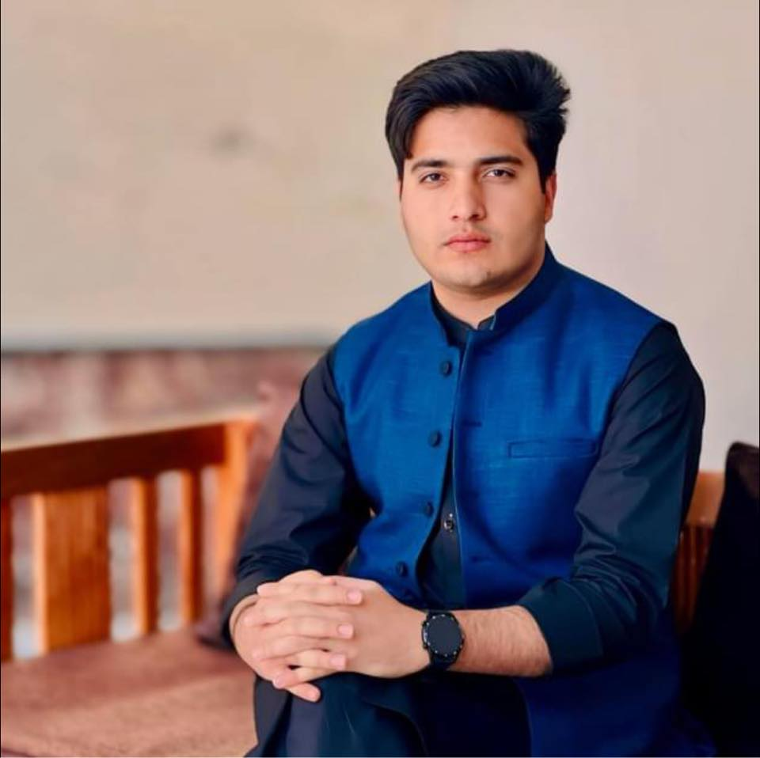
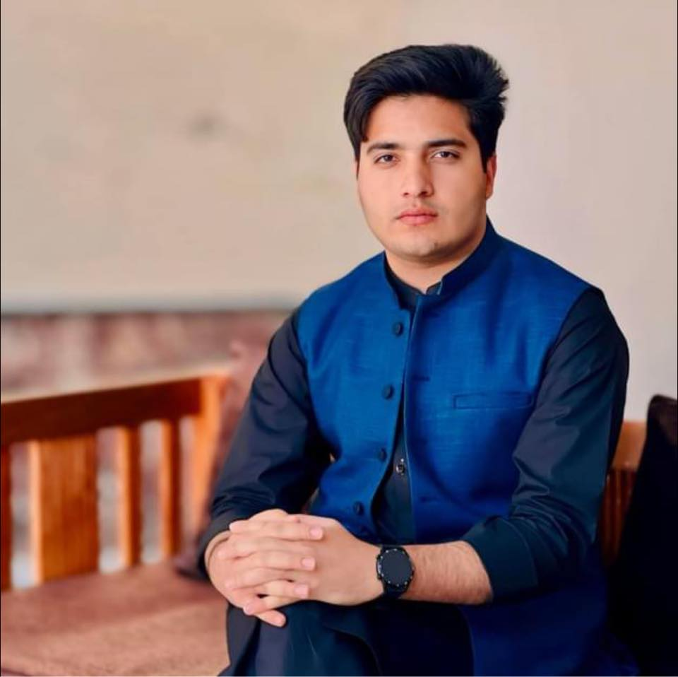

Ibrar Khan
Email: ibrarkhan1212@gmail.com
Phone: +923206493898
Swat, Khyber Pakhtunkhwa, 19240 PK
Professional Summary
Passionate and detail-oriented Web Developer with expertise in front-end and back-end technologies...
Skills
- HTML
- JavaScript Development
- Django Web Development
- Logical Reasoning Skills
- Operating Systems
- Matlab/Simulink
- Advanced CSS Techniques
- Next.js Application Building
- Python Development
- C/C++
- System Programming
- Digital Logic Design
Professional Experience
Web Developer Intern - Cognorise, Mumbai, India (Remote) (06/2024 - 07/2024)
- Wrote custom HTML and JavaScript for existing websites.
- Created a cloned version of Facebook, Netflix, and YouTube webpages.
- Created portfolio websites.
Education
Bachelor of Science, Computer Systems Engineering - University of Engineering and Technology Peshawar, Pakistan (Expected 07/2028)
Faculty of Science (FSc), Pre-Engineering - Edwardes College, Peshawar, Pakistan (04/2021)
Matriculation, Science Education - Swat Public School, Swat, Khyber Pakhtunkhwa, Pakistan (02/2018)
Certifications
- Front End Development Certification - FreeCodeCamp
- Responsive Web Design Certification - FreeCodeCamp
- Microsoft Certified, Azure Developer Associate - Microsoft
Languages
- Pashto: Native
- English: B2 (Upper Intermediate)
- Urdu: B2 (Upper Intermediate)
References
References available upon request.